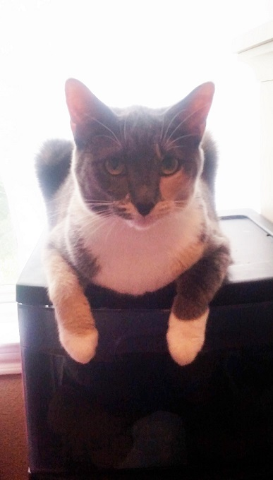

Here's the awesome group of men in their Tri-Lamb letter sweaters!
Thank you for visiting my page now checkout some extra information about your favorite film!
I love this series and the Tri-Lambs so much that I actually named my cat after them!

This is my lovely Lambda Lambda Lambda (Yes, that's her legitimate name)